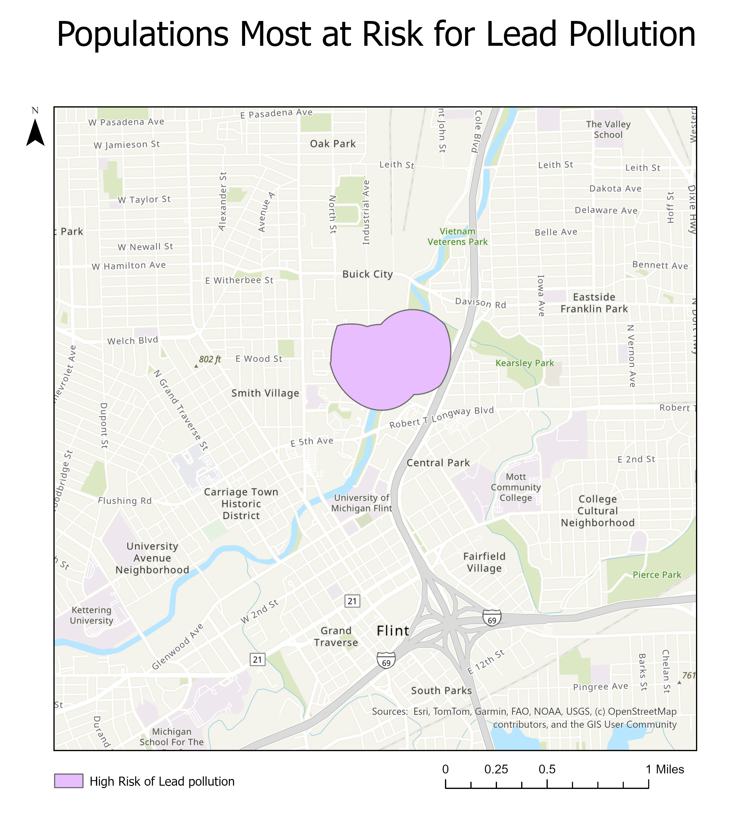

Problem
Which populations are at the highest risk for dangerous drinking water in Michigan? Specifically, areas that are within:
- 0.3 miles of a TRI facility with water pollution over 10,000 tons
- 0.3 miles of a river
- 0.2 miles with water service lines made of lead.
Solution
The only place in the State that matched all these criteria was Flint, MI.
Importance
Investigating who is at risk for contaminated water is crucial because the safety of tap water is generally considered a given by the general public. The responsibility to ensure that water is safe falls primairly on policymakers and regulators though academics and advocacy groups have a roll to play as well.
Creating maps and visualizations that highlight dangerous areas enables regulators to take appropriate actions and informs residents about the quality of their water.
Selected Skills
- Geospatial Data Managment Keeping datasets organized and ensuring that they are in a Coordinate Reference System that helps solve the problem.
To convert from one CRS to another I went to the map properties tab and selected the applicable CRS. To change the CRS of the shapefile I used the Project Tool on the Geoprocessing tab.
- Spatial Analysis and Environmental Mapping Using GIS tools to create maps about communities and the environment
I used techniques like buffering, intersecting, and selecting attributes to answer questions about our communities that inform decision making
- Data Integration and Relationship Mapping Joining multiple datasets to build spatial layers that have the needed information.
I joined multiple datasets to create the map of areas at high risk of lead contamination in tap water. This is important because datasets don’t always come perfectly prepared with all the correct fields. Being able to customize datasets is very important for analysis.